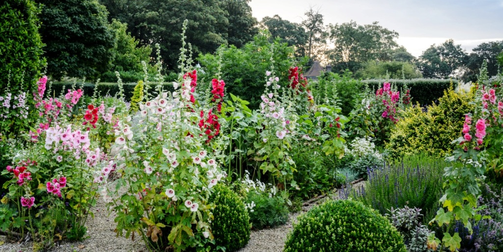

Situated on the North Tyne River, around six miles north of Hexham,
Chollerton is a tranquil village that is surrounded by beautiful views of the northern English countryside.
It is the perfect destination for anyone who is looking for a relaxing escape from the regular bustle of
everyday life, and therefore we are trying to keep this same feeling when you visit us at Chollerton
Tearooms. The tearoom is an excellent place to stop by and take in the scenic views as you talk with friends
and family over a cuppa. We also have many other facilities available,
not just a tearoom! If you're thinking that a tearoom may not be for you,
then we have a great selection of other types of facilities to visit and enjoy.
These, along with the tearoom of course, are detailed below.
The Tearoom
The tearoom is the classic quintessential aspect of any visit to the English
countryside. Our tearoom is one of the best in the North Tyne Valley, and is famous for its scenic views
and a wide selection of tea, coffee, other drinks and snacks. We also offer a selection of breakfast and
lunch options which cater to almost anyone's need. This is a great place to stop by and relax after a
long journey north (or south, depending on where you came from!) and just enjoy the atmosphere.
The General Store
Bringing you back to the "olden days", this general store has kept all of its
charm that it used to have during the 20th century. There is a large variety of things available in this
humble little store, from jars full of sweets to hand-crafted ornaments. Needless to say, there is always
something for everyone to buy! Keep an eye out for special offers on certain items when you visit, as they
are cropping up all the time. We also offer a loyalty card to returning customers who wish to get a permanent
10% discount on every purchase from all of our facilities, so if you like us a lot, it may be wise to
consider this!
The Souvenir Store

Take your memories with you in the form of a souvenir when you leave us and travel
back home. If you're coming from outside of the UK, we have plenty of UK-wide souvenirs that contain many
shades of red white and blue. We also have Norhumberland and Hexham-specific souvenirs that those who are
already living in the UK can enjoy.
The Post Office
If you need to cater to any postal or financial needs, we have a post office right
on site, and there is no need to travel down to Hexham in order to find a post office! You can find it right
next to the general store.
The Botanical Garden

Newly opened in October 2018, this botanical garden is situated in a spacious
opening with great views of the North Tyne Valley all around you. This garden contains over 1,000 different
species of plant that have been grown and cultivated on site in a range of environments, from
temperature-controlled greenhouses to the open air.
News and Events
- Annual Christmas Eve party - 24th December
- New menu options and shop items for 2019
- Mayor of Chollerton recommends us!
- We are now the best rated tearoom in the North Tyne Valley on TripAdvisor!
- Our new botanical garden opens in October
- New stock in the general and souvenir stores
E-Mail: chollerton.tearooms@gmail.com
Telephone no.: 01911234567
Post address:
- 3 Chishill Way, Chollerton, Hexham
- NE46 4TQ
- PO Box 123